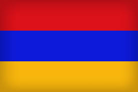
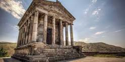

Armenian Story

Armenian Story
Armenia,[a] officially the Republic of Armenia,[b] is a landlocked country located in the Armenian Highlands of Western Asia.[16] It is a part of the Caucasus region; and is bordered by Turkey to the west, Georgia to the north, the Lachin corridor under a Russian peacekeeping force,[17] and Azerbaijan to the east, and Iran and the Azerbaijani exclave of Nakhchivan to the south.[18] Yerevan is the capital and largest city.,

ARMENIAN COAT OF ARMS
The law on the coat of arms of Armenia was adopted by the Supreme Council of Armenia on April 19, 1992. The coat of arms of the First Republic of Armenia (1918-1920) was restored, the authors of which are architect, academician of the Russian Academy of Fine Arts Alexander Tamanyan, painter Hakob Kojoyan

Khor Virap
Khor Virap, Khor Virap Monastery, architectural monument, 17th century monastery-fortress in Vostan Hayots province of Ayrarat province of Great Armenia, on the left side of Araks river, near Lusarat village, on one of the hills of the historical city of Artashat (now about 1 km from Lusarat village of Ararat region) north-west). It was one of the famous Armenian pilgrimage places connected with the name of Gregory the Illuminator.

Sights of Armenia
Garni Geghard
For other uses of the name, see Geghard Geghard, a village in the Kotayk Marz of Armenia, 74 km south-east of the regional center. It is located on the slope of Geghama mountains, near the source of Azat river. Geghard was renamed on April 4, 1946. The 25-part TV series "S! Mines" was shot there Founded in AD I century Region: Kotayk
